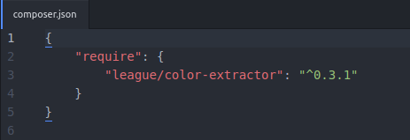
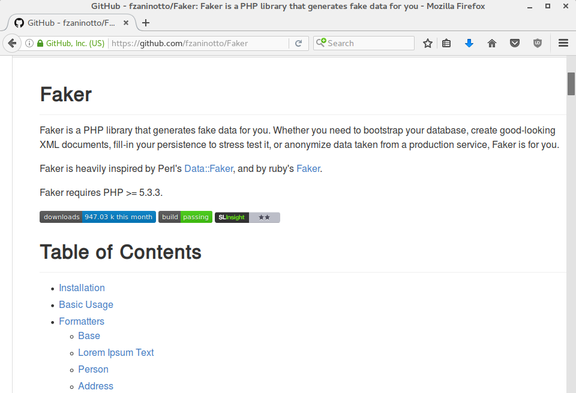
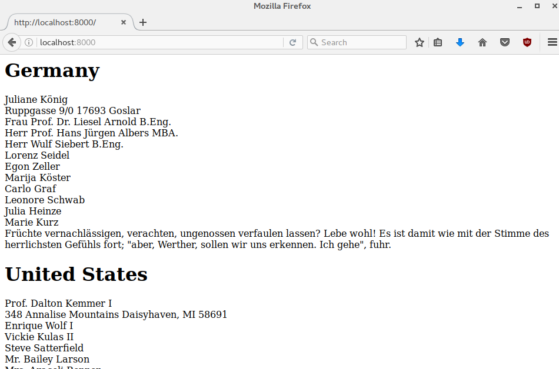

Composer in Drupal 8 Modules
Join the PHP community
Michael Lenahan
Drupal Developer at erdfisch in Heidelberg, Germany
michaellenahan on drupal.org and github
@mcaleaa on twitter

These slides were created using reveal.js

Use Composer in your own modules
Jordi Boggiano, December 2011


Exploring packagist
... and how to find good packages
thephpleague.com

thephpleague.com
Color extractor example
color-extractor on github


Go into any directory you want and run this command:
composer require "league/color-extractor"
Color extractor in PHP
So, what have you got now?composer.json file
composer.lock file
vendor directory
Color extractor in PHP
composer.json file
smile and take a moment to admire the beautiful simplicity of what you just witnessed

Your vendor directory has the code from the package

Color extractor in Drupal 8
Your projectroot/vendor directory has the code
Color extractor in Drupal 8
... and here are the classes you will use in your moduleColor extractor in Drupal 8
Install Drupal 8composer require "league/color-extractor:^0.3"
Color extractor in Drupal 8
Your drupalroot/vendor directory has the code
Color extractor in Drupal 8
... and here are the classes you will use in your moduleColor extractor in Drupal 8
Color extractor in Drupal 8
Color extractor in Drupal 8


faker

faker

faker
faker
commonmark

Related talk(s)
use screenshot for simplesamlphp-drupalcamp-munich-vincenzo-gambino.png these talks were proposed: http://dcmuc16.drupalcamp.de/en/sessions/efficient-development-workflows-composer http://dcmuc16.drupalcamp.de/en/sessions/building-drupal-sites-composer
Composer and Packagist
not just for core developers - also for "normal"* module developers * although actually I don't think we count as "normal"
Clever Quote
“If I have seen further than others, it is by standing upon the shoulders of giants.”Sir Isaac Newton This a copy of a painting by Sir Godfrey Kneller(1689). This copy was painted by Barrington Bramley. (http://www.newton.cam.ac.uk/art/portrait.html) [Public domain], via Wikimedia Commons
Learning curve
http://www.codem0nk3y.com/2012/04/what-bugs-me-about-modx-and-why/cms-learning-curve/
We are family - we need each other
spiel about a drupal meetup vs a php meetup. drupal --- "og!" "omg i know!" --- "page manager and panels!" "omg yes you are so right!" --- friends for life. php --- hello i do drupal --- hello i do typo3 --- goodbye then --- goodbye
We are family - we need each other
spiel about a drupal meetup vs a php meetup. drupal --- "og!" "omg i know!" --- "page manager and panels!" "omg yes you are so right!" --- friends for life. php --- hello i do drupal --- hello i do typo3 --- goodbye then --- goodbye
Composer in Drupal 8
So, what is this "composer" thing anyway?
Composer in Drupal 8
picture of d8 default installation what are: composer.json composer.lock vendor
Composer in Drupal 8
Bright new day
Vertical Slides
Slides can be nested inside of each other.
Use the Space key to navigate through all slides.
Basement Level 1
Nested slides are useful for adding additional detail underneath a high level horizontal slide.
Basement Level 2
That's it, time to go back up.
Slides
Not a coder? Not a problem. There's a fully-featured visual editor for authoring these, try it out at http://slides.com.
Point of View
Press ESC to enter the slide overview.
Hold down alt and click on any element to zoom in on it using zoom.js. Alt + click anywhere to zoom back out.
Touch Optimized
Presentations look great on touch devices, like mobile phones and tablets. Simply swipe through your slides.
Fragments
Hit the next arrow...
... to step through ...
... a fragmented slide.
Fragment Styles
There's different types of fragments, like:
grow
shrink
fade-out
fade-up (also down, left and right!)
current-visible
Highlight red blue green
Transition Styles
You can select from different transitions, like:
None -
Fade -
Slide -
Convex -
Concave -
Zoom
Themes
reveal.js comes with a few themes built in:
Black (default) -
White -
League -
Sky -
Beige -
Simple
Serif -
Blood -
Night -
Moon -
Solarized
Slide Backgrounds
Set data-background="#dddddd" on a slide to change the background color. All CSS color formats are supported.
Image Backgrounds
<section data-background="image.png">Tiled Backgrounds
<section data-background="image.png" data-background-repeat="repeat" data-background-size="100px">Video Backgrounds
<section data-background-video="video.mp4,video.webm">... and GIFs!
Background Transitions
Different background transitions are available via the backgroundTransition option. This one's called "zoom".
Reveal.configure({ backgroundTransition: 'zoom' })Background Transitions
You can override background transitions per-slide.
<section data-background-transition="zoom">Pretty Code
function linkify( selector ) {
if( supports3DTransforms ) {
var nodes = document.querySelectorAll( selector );
for( var i = 0, len = nodes.length; i < len; i++ ) {
var node = nodes[i];
if( !node.className ) {
node.className += ' roll';
}
}
}
}
Code syntax highlighting courtesy of highlight.js.
Marvelous List
- No order here
- Or here
- Or here
- Or here
Fantastic Ordered List
- One is smaller than...
- Two is smaller than...
- Three!
Tabular Tables
| Item | Value | Quantity |
|---|---|---|
| Apples | $1 | 7 |
| Lemonade | $2 | 18 |
| Bread | $3 | 2 |
Clever Quotes
These guys come in two forms, inline:
“The nice thing about standards is that there are so many to choose from”
and block:
“For years there has been a theory that millions of monkeys typing at random on millions of typewriters would reproduce the entire works of Shakespeare. The Internet has proven this theory to be untrue.”
Intergalactic Interconnections
You can link between slides internally, like this.
Speaker View
There's a speaker view. It includes a timer, preview of the upcoming slide as well as your speaker notes.
Press the S key to try it out.
Export to PDF
Presentations can be exported to PDF, here's an example:
Global State
Set data-state="something" on a slide and "something"
will be added as a class to the document element when the slide is open. This lets you
apply broader style changes, like switching the page background.
State Events
Additionally custom events can be triggered on a per slide basis by binding to the data-state name.
Reveal.addEventListener( 'customevent', function() {
console.log( '"customevent" has fired' );
} );
Take a Moment
Press B or . on your keyboard to pause the presentation. This is helpful when you're on stage and want to take distracting slides off the screen.
Much more
- Right-to-left support
- Extensive JavaScript API
- Auto-progression
- Parallax backgrounds
- Custom keyboard bindings